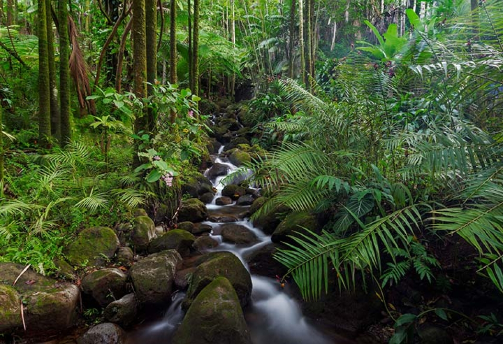

The nature is very important to us, because we human beings depend on the nature for our survival. The nature is the mother of us all. The nature provides us with everything that we need to live, and we also have the duty to protect the nature. The more we can understand the nature, the more we can protect the nature and also the more we can protect our own health and also our own happiness.” Kongpal said the First International Ocean Conference, the first of its kind, is a call for ocean protection and the nature’s protection, and it is also a call for the protection of marine resources and the environment.

plants are extraordinary living things although they seem simple, they are actually, in some ways, more complicated than us.For instance a whole new plant can grown from just a single leaf. no animal can accomplish that! The way that plants distribute their seeds is amazing too. Plants can shoot seeds from their pods, send them flying on the wind or grow spines that attach seeds to animals 'fur, spreading new generations everywhere.Plants are also amazinngly adaptable, finding ways to grow even in impossible environments, both hot and cold.Plants manufacture their own food form sunlight, absorbs nutrients from the ground, and fool insects into spreading their pollen. Truly, they are some of nature's finest creations.